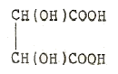
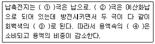
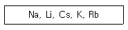
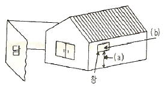

위험물산업기사 (2008-03-02 기출문제)
1과목: 일반화학
1. 다음의 변화 중 에너지가 가장 많이 필요한 경우는?
- 100℃의 물 1몰을 100℃ 수증기로 변화시킬 때
- 0℃의 얼음 1몰을 50℃ 물로 변화시킬 때
- 0℃의 물 1몰을 100℃ 물로 변화시킬 때
- 0℃의 얼음 10g을 100℃ 물로 변화시킬 때
(정답률: 82%)

2. 표준상태에서 어떤 기체 2.8L의 무게가 3.5g 이었다면 다음 중 어느 기체의 분자량과 같은가?
- CO2
- NO2
- SO2
- N2
(정답률: 65%)
3. 한 분자 내에 배위결합과 이온결합을 동시에 가지고 있는 것은?
- NH4Cl
- C6H6
- CH3OH
- NaCl
(정답률: 65%)
4. 원자번호 11이고 중성자수가 12인 나트륨의 질량수는?
- 11
- 12
- 23
- 28
(정답률: 93%)
5. 0.1N-HCl 1.0mL를 물로 희석하여 1000mL로 하면 pH는 얼마가 되는가?
- 2
- 3
- 4
- 5
(정답률: 52%)
6. 다음 중에서 산성 산화물은 어느 것인가?
- BaO
- CO2
- CaO
- MgO
(정답률: 85%)
7. 콜로이드 용액 중 소수콜로이드는 어느 것인가?
- 녹말
- 아교
- 단백질
- 먹물
(정답률: 46%)
8. 25℃ 에서 어떤 물질이 포화용액 90g 속에 30g 녹아 있다. 같은 온도에서 이 물질의 용해도는 얼마인가?
- 30
- 33
- 50
- 63
(정답률: 75%)
9. 다음 중에서 산성이 가장 강한 것은?
- [H+]=2×10-3 mol/L
- pH=3
- [OH-]=2×10-3 mol/L
- pOH=3
(정답률: 61%)
10. 0.1M 아세트산 용액의 전리도를 구하면 약 얼마인가? (단, 아세트산의 전리상수는 1.8×10-5 이다.)
- 1.8×10-5
- 1.8×10-2
- 1.3×10-5
- 1.3×10-2
(정답률: 35%)
11. 다음 구조를 갖는 물질의 명칭은 무엇인가?

- 구연산
- 주석산
- 젖산
- 말레산
(정답률: 38%)
12. 다음 물질 중에서 염기성인 것은?
- C6H5NH2
- C6H5NO2
- C6H5OH
- C6H5CH3
(정답률: 55%)
13. 반감기가 5일인 비지 사료가 2g 있을 때 10일이 경과하면 남은 양은 몇 g 인가?
- 2
- 1
- 0.5
- 0.25
(정답률: 79%)
14. 다음 ( )안에 알맞은 것을 차례대로 옳게 나열한 것은?

- ① : +, ② : -, ③ : PbSO4, ④ : H2SO4
- ① : -, ② : +, ③ : PbSO4, ④ : H2SO4
- ① : +, ② : -, ③ : H2SO4, ④ : PbSO4
- ① : -, ② : +, ③ : H2SO4, ④ : PbSO4
(정답률: 49%)
15. 20%의 소금물을 전기분해하여 수산화나트륨 1몰을 얻는 데는 1A의 전류를 몇 시간 통해야 하는가?
- 13.4
- 26.8
- 53.6
- 104.2
(정답률: 54%)
16. 네슬러 시약에 의하여 적갈색으로 검출되는 물질은 어느 것인가?
- 질산이온
- 암모늄이온
- 아황산이온
- 일산화탄소
(정답률: 68%)
17. 어떤 금속의 원자가는 2가이며, 그 산화물의 조성은 금속이 80wt% 이다. 이 금속의 원자량은 얼마인가?
- 28
- 36
- 44
- 64
(정답률: 61%)
18. 다음의 금속원소를 반응성이 큰 순서부터 나열한 것은?

- Cs > Rb > K >Na >Li
- Li > Na > K > Rb > Cs
- K > Na > Rb > Cs > Li
- Na > K > Rb > Cs > Li
(정답률: 48%)
19. 물 100g 에 소금 30g 을 넣어서 가열하여 완전히 용해시켰다. 이 용액을 전체 무게가 90g 이 될 때까지 끓여 물을 증발시키고 20℃ 로 냉각하였을 때 석출되는 소금은 몇 g 인가? (단, 20℃에서 소금의 용해도는 35이다.)
- 9
- 15
- 21
- 25
(정답률: 36%)
20. 에틸에테르는 에탄올과 진한 황산의 혼합물을 가열하여 제조할 수 있는데 이것을 무슨 반응이라고 하는가?
- 중합 반응
- 축합 반응
- 산화 반응
- 에스테르화 반응
(정답률: 58%)
2과목: 화재예방과 소화방법
21. 위험물 제조소에서 화기엄금 및 화기주의를 표시하는 게시판의 바탕색과 문자색을 옳게 연결한 것은?
- 백색바탕 - 청색문자
- 청색바탕 - 백색문자
- 적색바탕 - 백색문자
- 백색바탕 - 적색문자
(정답률: 73%)
22. 산ㆍ알칼리소화기에서 외통에는 주로 어떤 화학물질이 채워져 있는가?
- HNO3
- NaOH
- H2SO4
- NaHCO3
(정답률: 56%)
23. 탄산칼륨 등이 사용되어 한냉지에서 사용이 가능한 소화기는?
- 분말소화기
- 강화액소화기
- 포말소화기
- 이산화탄소소화기
(정답률: 71%)
24. 벤조일퍼옥사이드의 화재 예방상 주의 사항에 대한 설명 중 틀린 것은?
- 상온에서는 비교적 안정하나 열, 충격 및 마찰에 의해 폭발하기 쉬우므로 주의한다.
- 진한 질산, 진한 황산과의 접촉을 피한다.
- 비활성의 희석제를 첨가하면 폭발성을 낮출 수 있다.
- 수분과 접촉하면 폭발의 위험이 있으므로 주의한다.
(정답률: 60%)
25. 어떤 가연물의 착화에너지가 24cal 일 때, 이것을 일 에너지의 단위로 환산하면 약 몇 Joule 인가?
- 24
- 42
- 84
- 100
(정답률: 61%)
26. 특정옥외저장탱크의 지반의 범위는 기초는 외측이 지표면과 접하는 선의 범위 내에 있는 지반으로서 지표면으로부터 깊이 몇 m 까지로 하는가?
- 10
- 15
- 20
- 25
(정답률: 67%)
27. 인산암모늄(NH4H2PO4) 소화약제가 열분해되어 생성되는 물질로서 목재, 섬유 등을 구성하고 잇는 섬유소를 탈수탄화시켜 연소를 억제하는 것은?(오류 신고가 접수된 문제입니다. 반드시 정답과 해설을 확인하시기 바랍니다.)
- CO2
- NH3PO4
- H3PO4
- NH3
(정답률: 67%)
28. 은백색의 연한 금속으로 적자색의 불꽃을 내며 연소하고 에탄올과 반응하여 알코올레이트를 만드는 이 물질에 화재가 발생하였을 경우 주수소화가 불가능한 가장 큰 이유는?
- 수소가 발생하여 연소가 확대되기 때문이
- 유독가스가 발생하여 위험성이 높아지기 때문에
- 산소의 발생으로 연소가 확대되기 때문에
- 수증기의 증발열에 의한 화상 위험 때문에
(정답률: 58%)
29. 위험물을 저장하는 지하탱크저장소에 설치하여야 할 소화설비와 그 설치기준을 옳게 나타낸 것은?
- 대형소화기 - 2개 이상 설치
- 소형수동식소화기 - 능력단위의 수치 2이상으로 1개 이상 설치
- 마른모래 - 150L 이상 설치
- 소형수동식소화기 - 능력단위의 수치 3 이상으로 2개 이상 설치
(정답률: 49%)
30. 위험물제조소에서 옥내소화전이 1층에 4개, 2층에 6개가 설치되어 있을 때 수원의 수량은 몇 L이상이 되도록 설치하여야 하는가?(오류 신고가 접수된 문제입니다. 반드시 정답과 해설을 확인하시기 바랍니다.)
- 13000
- 15600
- 39000
- 46800
(정답률: 82%)
31. 다음 중 해당 유(類)별에 속하는 모든 위험물에 대하여 물분무소화설비의 적응성이 있는 것은?
- 제1류 위험물
- 제2류 위험물
- 제3류 위험물
- 제4류 위험물
(정답률: 51%)
32. 표준상태에서 적린 8mol 이 완전 연소하여 오산화인을 만드는데 필요한 이론 공기량은 약 몇 L 인가? (단, 공기 중 산소는 21vol% 이다.)
- 1066.7
- 806.7
- 224
- 22.4
(정답률: 61%)
33. 다음 할로겐화합물의 화학식과 Halon 번호가 옳게 연결된 것은?
- CH2ClBr - Halon 1211
- CF2ClBr - Halon 104
- C2F4Br2 - Halon 2402
- CF3Br - Halon 1011
(정답률: 83%)
34. 단층건물로 된 위험물제조소에 8개의 옥내소화전을 설치할 경우 필요한 최소방수량은 몇 m3/분 인가?
- 0.65
- 1.04
- 1.3
- 2.08
(정답률: 38%)
35. 제2류 위험물 중 철분 화재에 적응성이 있는 소화설비는?
- 무상강화액소화기
- 탄산수소염류 분말소화설비
- 이산화탄소 소화설비
- 포소화기
(정답률: 78%)
36. 가연물을 가열 할 때 점화원 없이 가열된 열만 가지고 스스로 연소가 시작되는 최저 온도는?
- 연소점
- 발화점
- 인화점
- 분해점
(정답률: 70%)
37. 제조소에서 취급하는 제4류 위험물의 최대수량의 합이 지정수량의 15만배의 사업소에 두어야 할 자체소방대의 화학소방자동차와 자체소방대원의 수는 각각 얼마로 규정되어 있는가? (단, 상호응원협정을 체결한 경우는 제외한다.
- 1대, 5인
- 2대, 10인
- 3대, 15인
- 4대, 20인
(정답률: 69%)
38. 가연물의 주된 연소형태에 대한 설명으로 옳지 않은 것은?
- 유황의 연소형태는 증발연소이다.
- 목재의 연소형태는 분해연소이다.
- 에테르의 연소형태는 표면연소이다.
- 숯의 연소형태는 표면연소이다.
(정답률: 72%)
39. 휘발유 10000L 에 해당하는 소요단위는 얼마인가?
- 2단위
- 3단위
- 4단위
- 5단위
(정답률: 74%)
40. 대통령령이 정하는 제조소등의 관계인은 그 제조소등에 대하여 부령이 정하는 바에 따라 연 몇 회 이상 정기점검을 실시해야 하는가? (단 특정옥외탱크저장소의 정기점검은 제외한다.)
- 1
- 2
- 3
- 4
(정답률: 81%)
3과목: 위험물의 성질과 취급
41. 과산화나트륨이 물과 반응할 때의 변화를 가장 적절하게 설명한 것은?
- 산화나트륨과 수소를 발생한다.
- 물을 흡수하여 탄산나트륨이 된다.
- 산소를 방출하며 수산화나트륨이 된다.
- 서서히 물에 녹아 과산화나트륨의 안정한 수용액이 된다.
(정답률: 76%)
42. 염소산칼륨과 염소산나트륨을 각각 가열하여 열분해 시킬때 공통적으로 발생하는 것은 무엇인가?
- O2
- Cl2
- CO2
- H2O
(정답률: 65%)
43. 다음 중 자연발화 위험성이 가장 큰 물질은?
- 황린
- 황화린
- 황
- 적린
(정답률: 60%)
44. 탄화칼슘에 대한 다음 설명 중 옳은 것은?
- 상온의 건조한 공기 중에서 매우 불안정하여 격렬하게 산화반응을 한다.
- 물과 반응하여 생성되는 기체는 산소 기체보다 무겁다.
- 물과 반응하여 생기는 기체의 연소 범위는 약 2.5 ~ 81% 로 매우 넓다.
- 순수한 것은 갈색의 액체상이다.
(정답률: 58%)
45. 유별을 달리하는 위험물의 혼재 기준에서 다음 중 혼재가 가능한 위험물은? (단, 지정수량 10배의 위험물을 가정한다.)
- 제1류와 제4류
- 제2류와 제3류
- 제3류와 제4류
- 제1류와 제5류
(정답률: 81%)
46. 벤젠의 일반적 성질에 대한 설명 중 틀린 것은?
- 비중은 약 0.88 이다.
- 녹는점은 약 5.5℃ 이다.
- 끓는점은 약 220℃ 이다.
- 인화점은 약 -11℃ 이다.
(정답률: 47%)
47. 니트로셀룰로오스의 안전한 저장 및 운반에 대한 설명으로 옳은 것은?
- 습도가 높으면 위험하므로 건조한 상태로 취급한다.
- 아닐린과 혼합한다.
- 산을 첨가하여 중화시킨다.
- 알코올로 습면시킨다.
(정답률: 68%)
48. 질산의 성질에 대한 다음 설명 중 틀린 것은?
- 질산을 가열하면 적갈색의 일산화질소를 발생하면서 연소한다.
- 환원성이 강한 물질과의 혼합은 위험하다.
- 부식성을 가지고 있다.
- 위험물안전관리법에서 위험물로 규정한 질산은 물보다 무겁다.
(정답률: 46%)
49. 탄화칼슘이 물과 반응 했을 때 다음 중 옳은 반응은?
- 탄화칼슘 + 물 → 소석회 + 산소
- 탄화칼슘 + 물 → 생석회 + 인화수소
- 탄화칼슘 + 물 → 생석회 + 일산화탄소
- 탄화칼슘 + 물 → 소석회 + 아세틸렌
(정답률: 73%)
50. 은백색의 금속으로 노란 불꽃을 내면서 연소하고, 수분과 접촉하면 수소를 발생하는 물질은?
- 탄화알루미늄
- 인화석회
- 나트륨
- 칼륨
(정답률: 71%)
51. 금속 과산화물을 묽은 산에 반응시켜 생성되는 물질로서 석유와 벤젠에 불용성이고, 표백작용과 살균작용을 하는 것은?
- 과산화나트륨
- 과산화수소
- 과산화벤조일
- 과산화칼륨
(정답률: 66%)
52. 메틸에틸케톤의 취급 방법에 대한 설명으로 틀린 것은?
- 쉽게 연소하므로 화기 접근을 금한다.
- 직사광선을 피하고 통풍이 잘되는 곳에 저장한다.
- 탈지작용이 있으므로 피부에 접촉하지 않도록 주의한다.
- 유리 용기를 피하고 수지, 섬유소 등의 재질로 된 용기에 저장한다.
(정답률: 78%)
53. 위험물의 운반에 관한 기준에서 위험물을 수압한 운반용기의 외부에 표시해야 하는 사항이 아닌 것은? (단, 기계에 의하여 하역하는 구조로 된 운반용기는 제외한다.)
- 위험물의 품명
- 위험물의 수량
- 운반용기의 제조 년월일
- 규정에 의한 주의사항
(정답률: 74%)
54. 다음 그림은 제5류 위험물 중 유기과산화물을 저장하는 옥내저장소의 저장창고를 개략적으로 보여 주고 있다. 창과 바닥으로부터 높이(a)와 하나의 창의 면적(b)은 각각 얼마로 하여야 하는가? (단, 이 저장창고의 바닥 면적은 150m2 이내의 경우라고 한다.)

- (a) 2m이상, (b) 0.8m2 이내
- (a) 3m이상, (b) 0.6m2 이내
- (a) 2m이상, (b) 0.4m2 이내
- (a) 3m이상, (b) 0.3m2 이내
(정답률: 73%)
55. 다음 물질 중 취급하는 장치가 구리나 마그네슘으로 되어 있을 때 반응을 일으켜서 폭발성의 아세틸라이드를 생성하는 것은?
- 이황화탄소
- 이소프로필알코올
- 산화프로필렌
- 아세톤
(정답률: 76%)
56. CH3COCH3로 나타내는 위험물의 명칭은?
- 에틸알코올
- 아세톤
- 초산메틸
- 메탄올
(정답률: 62%)
57. 공기 중에 노출되면 자연발화의 위험이 있고 물과 접촉하면 폭발의 위험이 따르는 것은?
- CH3COCH3
- (CH3)3Al
- CH3CHO
- CS2
(정답률: 70%)
58. 위험물 옥내 저장소의 피뢰설비는 지정수량의 최소 몇 배 이상인 저장 창고에 설치하도록 하고 있는가?
- 10
- 15
- 20
- 30
(정답률: 73%)
59. 과산화수소 용액의 분해를 방지하기 위한 방법으로 가장 거리가 먼 것은?
- 햇빛을 차단한다.
- 가열하여 보관한다.
- 인상을 가한다.
- 요산을 가한다.
(정답률: 77%)
60. 특정옥외저장탱크를 원통형으로 설치하고자 한다. 지면으로부터의 높이가 9m 일 때 이 탱크가 받는 풍하중은 1m2당 얼마 이상으로 계산하여야 하는가?
- 0.7640kN
- 1.2348kN
- 17.640kN
- 22.348kN
(정답률: 54%)